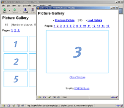
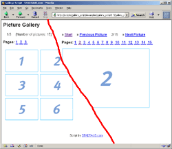

Gallery Script präsentiert: Online Terminreservierung
Unser Programm Schedule Organizer ermöglicht den Kunden, Patienten oder Mandanten die Terminreservierung über die Homepage der Firma, ihres Arztes oder ihres Beraters. Das PHP-Script erleichtert und automatisiert die Terminverwaltung - die zuständigen Mitarbeiter werden entlastet, denn es müssen weniger Telefonanrufe entgegen genommen oder weniger Faxe und Briefe beantwortet werden.
Schedule Organizer Website
Nach oben
Dokumentation Galerie-Script
Vielen Dank für Ihr Interesse an unserem Galerie-Script. Wir empfehlen Ihnen, sich Zeit für die Lektüre dieser Anleitung zu nehmen.
Einleitung
Das Script ist für den sofortigen Einsatz konfiguriert und eingerichtet. Nachdem Sie das Script auf den Server kopiert haben, können Sie es sofort verwenden. Wenn Sie Änderungen vornehmen möchten, sollten Sie diese Schrittweise durchführen und nach jeder Änderung die Auswirkung auf das Script zu testen. Sie behalten dadurch den Überblick, welche Änderung einen eventuell auftretenden Fehler verursacht hat.
Die HTML-Templates wurden nach den Spezifikationen für XHTML 1.0 erstellt. Deshalb enthalten alle einfachen Tags (<br> oder <input>) einen abschließenden Slash (<br /> oder <input type="text" name="feld" />).
Funktionen im Überblick
- Liest automatisch alle Bilder in einem Verzeichnis ein
- Bilder in einer Reihe und pro Seite können festgelegt werden
- Sortierreihenfolge der Bilder kann festgelegt werden
- Programm-Code und HTML-Quellcode sind getrennt (Templates) - das Layout ist leicht anpassbar
- Bildaufrufe können gezählt und angezeigt werden
Konfiguration des Scripts
Die Dateien 'index.php' und 'window.php' (bzw. 'y_frame_navi.php' und 'y_frame_main.php' oder 'z_simple_index.php' und 'z_simple_window.php') stellen das gleiche Script dar, sind jedoch unterschiedlich konfiguriert. Folgende Variablen sind in den Dateien zu editieren:
| $image_path |
|
Wenn Sie ein anderes Bildverzeichnis als das Voreingestellte nutzen möchten, können Sie den Pfad in dieser Variable ändern. Tragen Sie dort den absoluten Serverpfad (z.B.: /usr/local/etc/.../images/bildergalerie oder /kunden/homepages/7/d543863/htdocs/images) ein. Alternativ können Sie auch den relativen Pfad, also ausgehend von der Position des Scripts, eingeben (z.B.: ../bilder/party).
|
| $image_url |
|
In dieser Variable ist der Bild-Pfad zum Aufruf in den HTML-Seiten anzugeben. Sie können den relativen Pfad, also ausgehend, von der Position des Scripts, angeben oder den absoluten Pfad ausgehend vom WWW-Root (z.B.: bei http://www.server.de/images/bild.gif ist der absolute Pfad '/images/bild.gif').
|
| $picture_count |
|
In dieser Variable legen Sie fest, wie viele Bilder in einer Reihe angezeigt werden sollen. Der Standardwert in der 'index.php' ist 2 Bilder in einer Reihe. Der Standardwert von 'window.php' 1 Bild in einer Reihe. Die Anzahl kann beliebig verändert.
|
| $pictures_per_page |
|
Mit dieser Variable bestimmen Sie die Anzahl der Bilder auf einer Seite.
|
| $order |
|
Mit dieser Variable legen Sie die Sortierrichtung fest. 'ascending' bedeutet aufsteigende Sortierung (a, b, c, 1, 2, 3), 'descending' sortiert absteigend (c, b, a, 3, 2, 1). Die Sortierung richtet sich nach dem Dateinamen. Stellen Sie sicher, dass in miteinander korrespondierenden Dateien $order immer den gleichen Wert hat (index.php und window.php müssen mit der selben Richtung konfiguriert werden).
Beispiel:
$order = "ascending";
oder
$order = "descending";
|
| $language |
|
Hier können Sie die Sprache festlegen. Eingetragen werden muss hier das Kürzel, dass auch im Namen der Sprachdatei im Verzeichnis 'languages' verwendet wurde (de bei languages.de.inc.php und en bei languages.en.inc.php).
|
| $global_template |
|
Tragen Sie hier den Pfad zum Global-Template ein. Das ist das Template für das Layout der Seite.
|
| $cell_template |
|
Tragen Sie hier den Pfad zum Template für die Tabellenzellen ein. Darin können Sie die Bilder, die Links zu den großen Bildern und natürlich die Tabellenzellen formatieren.
|
| $large_image_page |
|
Tragen Sie hier den Namen der Datei ein, die beim Klick auf die Links geöffnet werden soll. Das bedeutet, wenn die Datei index.php die Vorschaubilder enthalten soll und die Datei window.php die Großansicht der Bilder, dann muss in diese Variable in der index.php den Wert window.php enthalten.
|
| $path['log'] |
|
Sie können die Aufrufe der Bilder durch das Script zählen lassen. Diese Variable enthält den Pfad zu dem Verzeichnis, in dem die Log-Datei gespeichert wird.
Wenn Sie die Zählfunktion nutzen möchten, stellen Sie bitte sicher, dass das Log-Verzeichnis Schreibrechte besitzt (chmod 777).
|
| $logging_file |
|
Wenn Sie die Aufrufe der Bilder durch das Script zählen lassen möchten, tragen Sie bitte in diese Variable den gewünschten Dateinamen ein. Leerzeichen und Sonderzeichen sind nicht erlaubt. Die Endung können Sie selbst wählen.
Standardmäßig ist diese Variable leer, es werden also keine Bildaufrufe gezählt, solange Sie keinen Namen für die Log-Datei angeben.
Wenn Sie die Zählfunktion nutzen möchten, stellen Sie bitte sicher, dass das Log-Verzeichnis Schreibrechte besitzt (chmod 777).
|
| $statistic_file |
|
Wenn sie die durch das Script gezählten Bildaufrufe für den Besucher sichtbar machen möchten, tragen Sie bitte in diese Variable den Namen der Datei ein, die ausgewertet werden soll. Die Werte stehen dann in dem Platzhalter {views} in den HTML-Templates zur Verfügung.
Als Beispieldatei für die Zählfunktion enthält das Script die Log-Datei 'gallery_one.txt' im Log-Verzeichnis. Damit soll die Anzeige der Bildaufrufe demonstriert werden.
Wenn Sie die Zählfunktion nutzen möchten, stellen Sie bitte sicher, dass das Log-Verzeichnis Schreibrechte besitzt (chmod 777).
|
| $add_text |
|
Sie können weitere Werte, Text, Variablen oder andere Inhalte an dieser Stelle festlegen. Diese Inhalte können Sie dann mit Hilfe von entsprechenden Markierungen in geschweiften Klammern in die Templates übertragen.
Wenn Sie eigene Werte in der Variable $add_text hinzufügen folgen Sie bitte dem Muster, dass durch die beiden Beispieleinträge deutlich gemacht wurde.
$add_text = array(
'txt_additional' => 'Additional',
'txt_more' => 'More'
);
Der erste Teil eines Eintrags (z.B.: txt_additional) stellt den Namen der Platzhalter im Template dar. Wenn Sie also den Wert von txt_additional im Template anzeigen möchten, tragen Sie dort den Namen umschlossen von geschweiften Klammern ein - {txt_additional}. Der Name darf keine Leer- oder Sonderzeichen enthalten. Erlaubt ist nur der Unterstrich.
|
Wenn Sie beim Aufruf des Scripts einen leeren Bildschirm (keine Anzeige, keine Fehlermeldung) erhalten, sind Sie wahrscheinlich auf ein Problem gestoßen, dass uns zwar bekannt, das wir aber noch nicht gelöst haben. Bitte teilen Sie uns Betriebssystem, PHP-Version und Webserver-Version mit.
Nach oben
Anpassung des HTML-Templates
Im Verzeichnis '/templates/' befinden sich die Templates, die das Layout des Scripts beinhalten. Mit Hilfe von HTML und CSS können Sie das Layout Ihren Wünschen anpassen.
Die Templates 'index.html' und 'window.html' beinhalten jeweils das Gesamt-Layout. Die Templates 'table.html' und 'window_table.html' beinhalten das Layout der Tabellenzeilen. Die enthaltene Tabellenzelle (Zeilen- und Zellendefinition) gilt als Beispiel für jede Zelle in der Tabelle und wird entsprechend der Anzahl der Bilder vom Script automatisch vervielfältigt.
Sollten Sie für die Anpassung WYSIWYG-Editoren wie Dreamweaver, Frontpage oder NetObjects verwenden, achten Sie bitte darauf, dass die Software keine eigenmächtigen Veränderungen vornimmt. Die Funktionsweise des Scripts könnte dadurch beeinträchtigt werden.
In den Templates befinden sich Markierungen/Platzhalter in geschweiften Klammern, wie zum Beispiel {txt_next_page}. Die werden beim Aufruf des Scripts durch die entsprechenden Wörter ersetzt. Diese Wörter finden Sie in der Datei 'languages/language.de.inc.php'. Natürlich können Sie diese Wörter auch ändern oder an eine andere Position innerhalb des Templates verschieben. Es spricht auch nichts dagegen, wenn Sie die Markierungen durch richtige Wörter ersetzen. Ebenso können Sie die Sprachdatei nach dem vorgegebenen Muster erweitern.
Neben den Platzhaltern für die Wörter existieren die so genannten Loops. Ähnlich wie HTML-Tags gehört immer ein Paar zusammen und darf auch nicht getrennt werden (...). Sie haben aber die Möglichkeit, die Position des gesamten Blocks zu verändern.
Folgende Platzhalter werden vom Script genutzt:
{script_name} Name der Galerie-Datei
{prev} Startwert für die vorhergehende Seite
{next} Startwert für die nächste Seite
{currentpage} Aktuelle Seitenzahl
{allpages} Gesamte Anzahl der Seiten
{allpictures} Gesamte Anzahl der Bilder
{link} Linknummer der Dateien
{page} Nummer der Dateien
{tablecontent} Inhalt des Tabellen-Templates
{large_image_page} Dateiname der Datei für die großen Bilder
{number} Bildnummer
{image_url} Pfad zum Bildverzeichnis
{name} Bildname
Das Script wurde für drei verschiedene Ansichten vorkonfiguriert:

|
|
Fenstermodus. Die großen Bilder werden im PopUp (kleines Fenster) geöffnet. Die Dateinamen der beiden Dateien lauten 'index.php' und 'window.php'. Die Templates lauten 'index.html', 'table.html', 'window.html' und 'window_table.html'.
|

|
|
Einfacher Modus. Vorschaubilder und große Bilder werden jeweils im selben Fenster angezeigt. Die Namen der beiden Dateien lauten 'z_simple_index.php' und 'z_simple_window.php'. Das Template für die Vorschaubilderzellen heißt 'x_simple_table.html' und das Layout-Template für die Großansicht heißt ' x_simple_window.html'. Die anderen beiden Templates sind die selben wie in der Fenster-Version.
|

|
|
Die Vorschaublider werden in einem Navigations-Frame angezeigt und die großen Bilder werden im Hauptframe angezeigt. Die Namen der drei Dateien lauten 'y_frame_index.php', 'y_frame_main.php' und 'y_frame_navi.php'. Das Template für die Frame-Index-Seite heißt 'x_frame_index.html'. Das Template für die Vorschaubilderzellen heißt 'x_frame_navi_table.html'. Die anderen drei Templates sind die selben wie in der Fenster-Version.
|
Mehrere Bildergalerien einrichten
Sie können mehrere Bildergalerien mit den selben Layout-Templates betreiben, wenn Sie die Dateien 'index.php' und 'window.php' kopieren und mit einem anderen Dateinamen versehen. Sie müssen dann nur noch den Pfad zum Bildverzeichnis ändern und schon haben Sie eine weitere Bildergalerie erstellt.
Nach oben
Die Bilder
Die Bildverzeichnisse werden eingelesen und die Bilder danach entsprechend Ihren Einstellungen sortiert. Mit der Benennung der Bilder können Sie die Reihenfolge festlegen.
Optional können sie eine Datei mit dem Namen 'image_order.txt' (sofern sie nicht bereits existiert) anlegen und darin die Bildnamen in der gewünschten Reihenfolge eintragen (alle Namen untereinander). Die Datei muss sich im entsprechenden Bildverzeichnis befinden.
Wenn Sie die Bilder anhand des Dateinamens sortieren möchten, löschen Sie einfach die 'image_order.txt' aus den Bildverzeichnissen.
Wenn Sie mit Vorschaubildern und zugehörigen großen Bildern arbeiten, müssen die Dateinamen der jeweils zusammen gehörenden Bilder gleich lauten.
Achten Sie darauf, dass sich im Bildverzeichnis auch wirklich nur Dateien befinden, die Sie anzeigen möchten. Wenn Sie die Datei 'image_order.txt' nicht verwenden möchten, löschen Sie diese bitte. Umbenennen reicht nicht aus und kann zu Fehlern bei der Anzeige führen.
Nach oben
Bildaufrufe zählen und anzeigen
Sie können den Aufruf der Bilder vom Script mitzählen und anzeigen lassen. Das Zählen der Aufrufe aktivieren Sie, indem Sie einen Dateinamen in der Variable $logging_file eintragen. Wenn Sie denselben Dateinamen in der Variable $statistic_file eintragen, wird diese Datei zur Auswertung der Aufrufe verwendet.
Wenn Sie diese Funktion nutzen, stellen Sie bitte sicher, dass das Verzeichnis 'log' und die Datei, die in $logging_file eingetragen wurde, Schreibrechte besitzen (chmod 777).
Zur Demonstration der Zählfunktion wurden die Dateien 'x_views_index.php' und 'x_views_window.php' eingerichtet. Dazu gehören die Template-Dateien 'x_views_table.html' und 'x_views_window_table.html'.
Die Templates enthalten innerhalb der <LOOP ...> Tags den Platzhalter {views}. Dieser Platzhalter wird automatisch durch die entsprechende Zahl ersetzt.
Schauen Sie auch in den Templates 'x_views_table.html' und 'x_views_window_table.html' nach, wie der Platzhalter im HTML-Code eingefügt wird.
Nach oben
Informationen (z. B. Bildbeschriftungen) den Bildern zuordnen
Mit Hilfe der 'image_order.txt' können jedem Bild Informationen (Beschriftungen, Beschreibungen) zugeordnet werden.
Zur Demonstration dieser Funktion wurden die Dateien 'zz_captions_index.php' und 'zz_captions_window.php' eingerichtet. Dazu gehört das Template 'zz_captions_window_table.html'. Die zusätzlichen Informationen werden bei der Großversion des Bildes angezeigt (PopUp-Fenster).
Die Datei 'image_order.txt' im Verzeichnis 'images/big' enthält erweiterte Informationen zur Anzeige beim entsprechenden Bild. Die 'image_order.txt' kann als CSV-Datei angesehen werden. Sie können nach dem Dateinamen des Bildes durch Semikolon getrennt weitere Daten eintragen.
Beispiel:
01.gif;Bildbezeichnung;Bildbeschreibung
Jedem Feld (Spalte) wird automatisch ein Platzhalter zum Eintragen im Template zugewiesen. Jede Spalte wird als Feld bezeichnet, gezählt wird ab 1 aufwärts bei jedem neuen Feld.
Beispiel:
{field_1} {field_2} {field_3} ...
Schauen Sie auch im Template 'zz_captions_window_table.html' nach, wie die Platzhalter im HTML-Template eingebunden werden.
Nach oben
Dateien auf den Webserver kopieren - Upload
Erstellen Sie auf dem Server folgende Verzeichnisse:
/galerie/
/galerie/images/
/galerie/inc/
/galerie/languages/
/galerie/log/
/galerie/templates/
Kopieren Sie alle Dateien in ihre entsprechenden Verzeichnisse auf den Server. Alle Bilddateien (.gif, .jpg, .png) müssen im Binär-Modus (Binary) auf den Server übertragen werden. Alle restlichen Dateien müssen im ASCII-Modus (Text-Modus) hochgeladen werden.
Nach oben
Nutzung und Lizenzierung
Sie können das Galerie-Script kostenlos nutzen. Wenn Sie das Script ohne Hinweis und Link auf STADTAUS.com betreiben möchten, können Sie die Vollversion online erwerben.
- Sie können die Script-Lizenz an Dritte verkaufen, auch als professioneller Reseller.
- Den Preis können Sie dabei selbst bestimmen.
- Die Script-Lizenz gilt für eine Domain.
Kontakt: http://www.stadtaus.com/
Weitere Scripts auf STADTAUS.com:
- Formmail-Script
- Tell-A-Friend-Script (Website-Empfehlung)
- Apotheken-Notdienstkalender
- Website-Empfehlungs-Script
- Online-Terminplaner
- Google-Tool
- Download-Script
- Gästebuch-Script
- Voting-Script
Besuchen Sie unser Projekt MetaCollection. Die Seite ist ein Verzeichnis deutscher und internationaler Script-Archive.
http://www.metacollection.com/
Nach oben
Support
Antworten auf Ihre Fragen und Lösungen für Probleme mit dem Script finden Sie in unserem
Support-Forum.
Nach oben